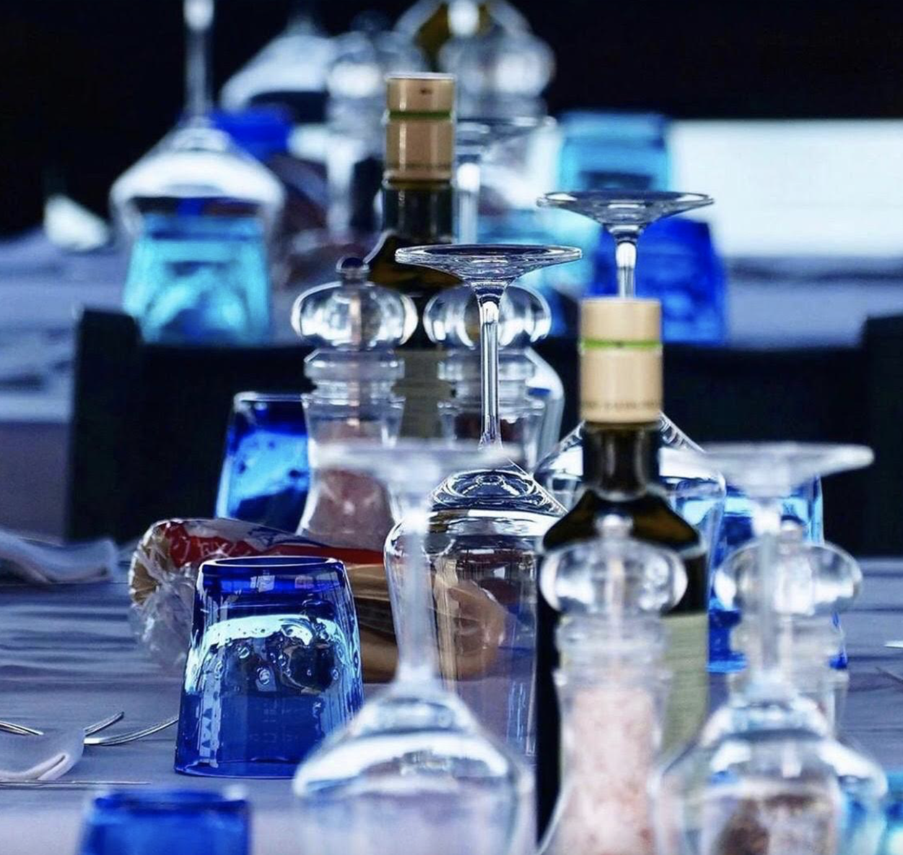
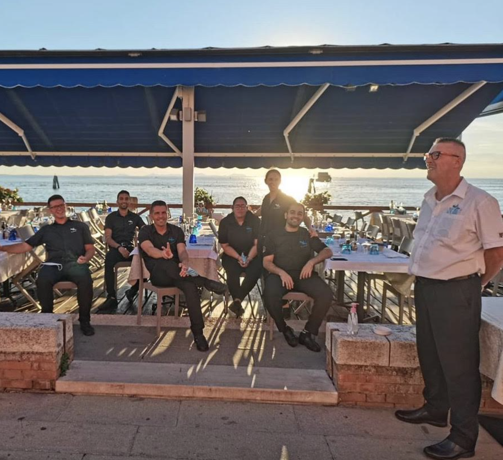
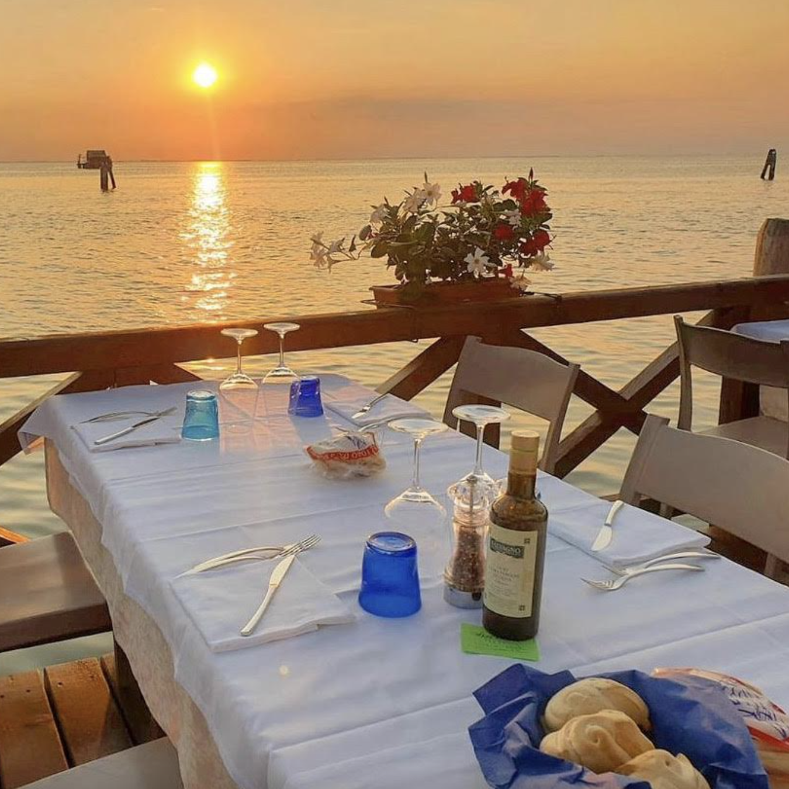
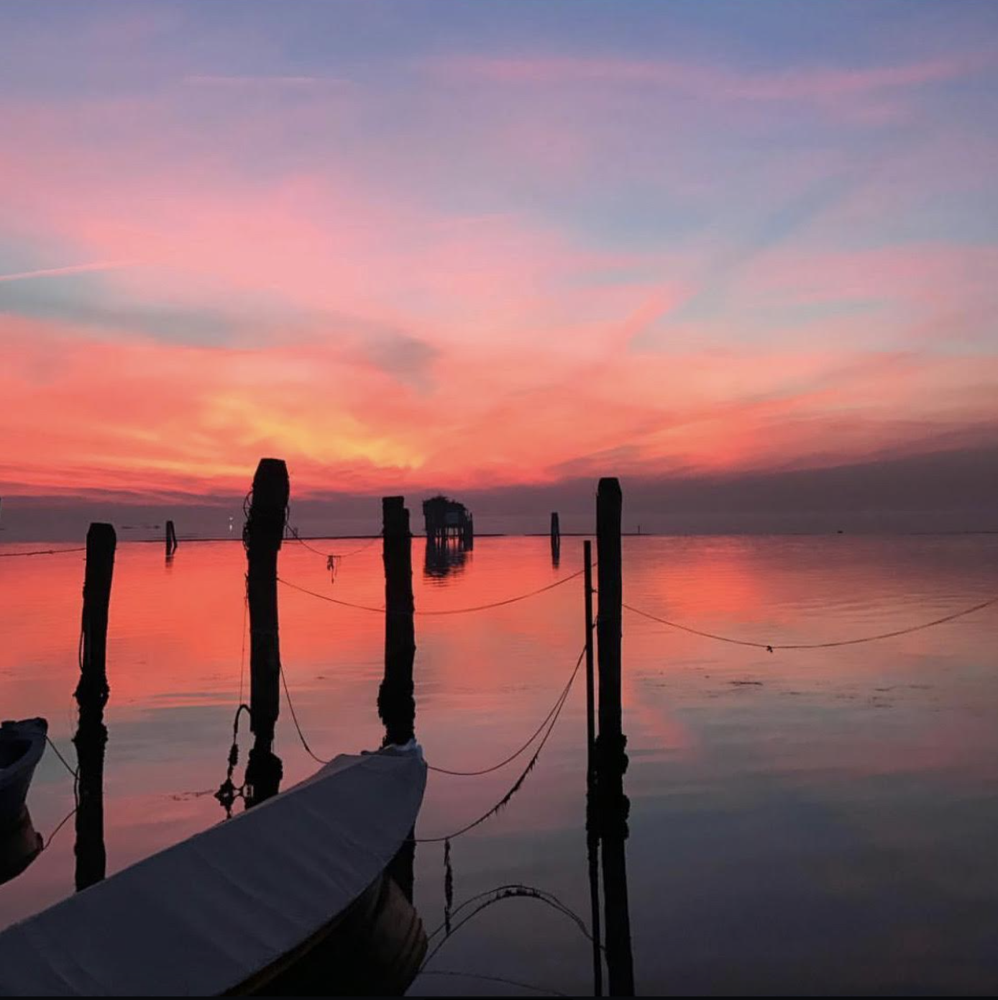

The familyfamiglia restaurant, which is called "Da Celeste" was founded by granpanonno Celeste 30 years ago, and the whole family except you have been working there for ages.

Rossano, your dad, who is now the ownerproprietario , has been working there since he was fifteen. He is the main waiter and during summer he's there from 7 in the morningmattina until past midnight.
He always tell you that his work is very hard but he gets a lot of satisfactionsoddisfazione from it. The food is exquisite, and one of the main strong point of the restaurantristorante is the terrace above the lagoon during sunset.

You will not be suprised if during any evening you see people taking out their phone and taking picturefoto or selfies while eating with the sunset behind them. It is an Instagram moment.

While you're at the restaurant you can either choose to sit down and have lunch, or be helpful and offer some help to the Da Celeste team. Any preferences?